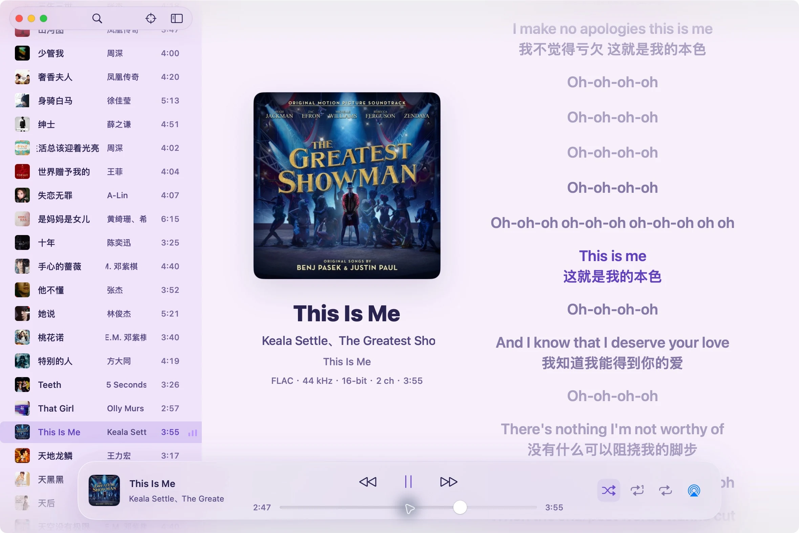
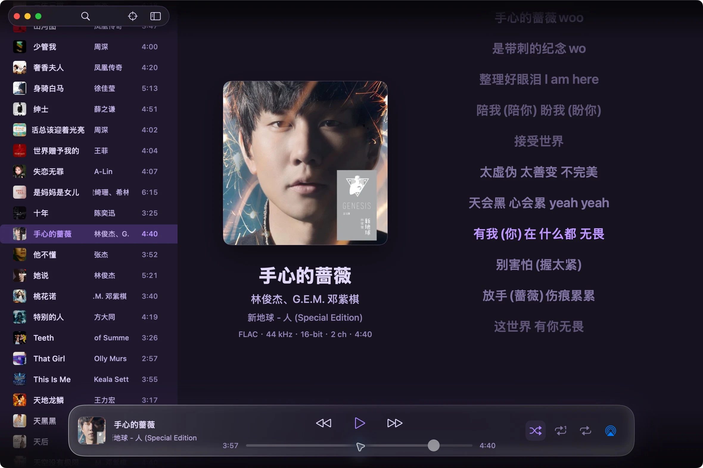
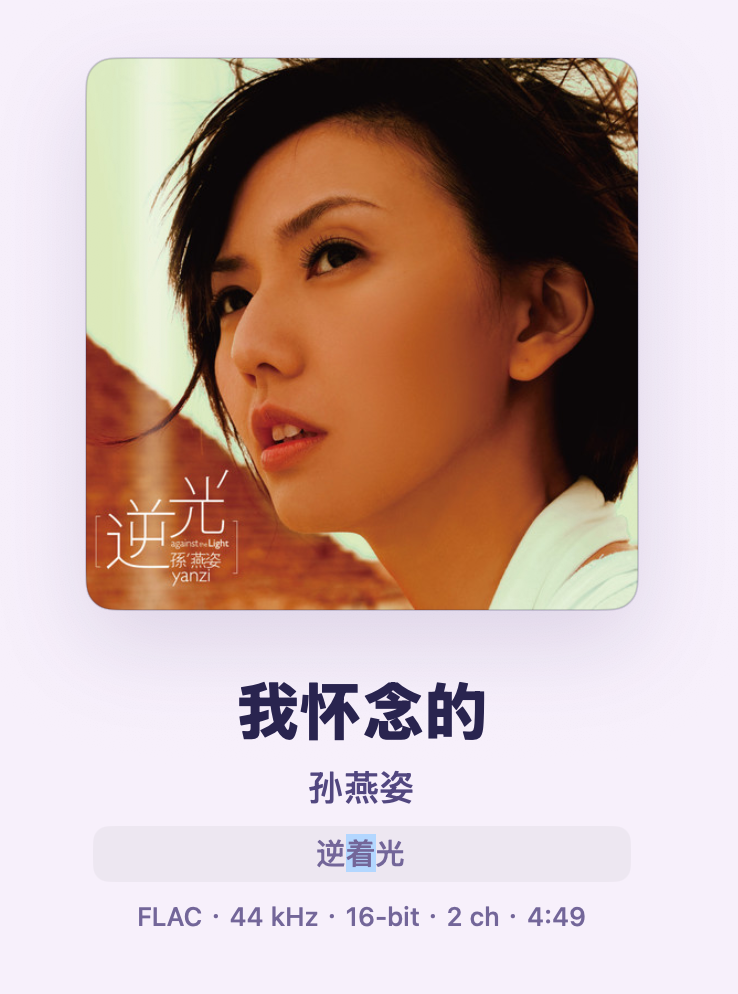
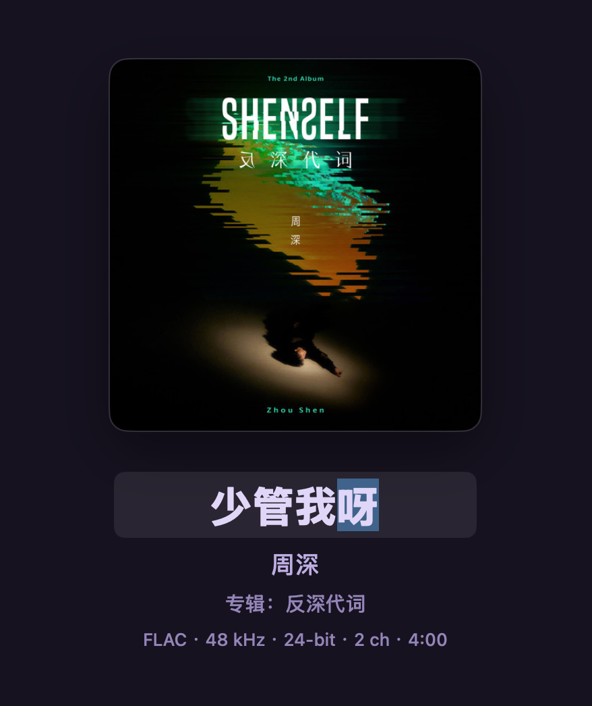

文件就在原来的地方
导入音乐文件夹，不复制音频，不改变目录。重新扫描时只更新有变化的文件。


导入音乐文件夹，不复制音频，不改变目录。重新扫描时只更新有变化的文件。
快速搜索、定位当前歌曲，随机或循环播放。下次打开，接着上次选中的歌。
原生窗口与全屏，浅色、深色或跟随系统。收起侧边栏，留更多空间给封面和歌词。
从一张专辑到整个音乐文件夹。紧凑列表、封面缩略图和快捷搜索，让常听的歌随时找得到。
同名歌词放在音频旁边，自动读取。固定字号、颜色高亮，翻译和长句也能完整展开。


双击歌曲名、歌手、专辑就能编辑。双击封面，换上喜欢的那一张。
写回 FLAC 需安装 metaflac；MP3、M4A、AAC 需 ffmpeg。未安装时仍可在曲库内编辑。
同一网络中的 AirPlay 接收器自动接入。启动时只有本机出声，想在哪台播放，再轻轻勾选。
自动接入需辅助功能授权，接收端需开启 AirPlay 接收器。已在 Mac mini 与 MacBook Air 上验证；其他设备与网络的效果可能不同。不支持 iPad 接收。
在“系统设置 → 隐私与安全性”中找到 zihusic，选择“仍要打开”。如果明确提示应用“已损坏”，确认下载来自本项目 Release 后，可在终端执行：
xattr -dr com.apple.quarantine /Applications/zihusic.app更新后若 AirPlay 自动接入失效，在“辅助功能”中移除旧的 zihusic 条目，再添加 Applications 中的新版本。